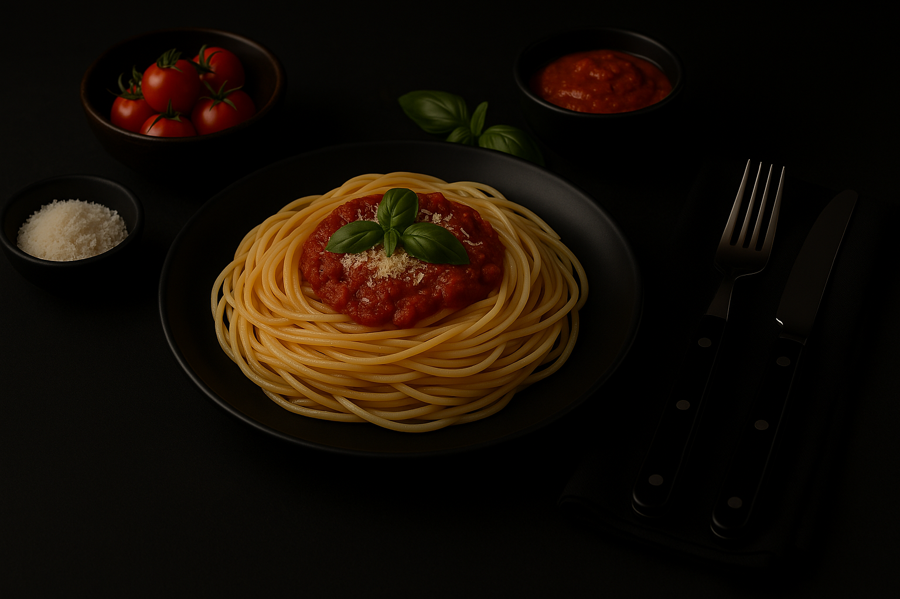

Pasta al Pesto

Ingredientes
- 500g de Pasta (Espaguetis).
- 300g de Carne Picada en Trozos.
- 1 Cebolla.
- 1 Zanahoria.
- 1/2 Pimiento Rojo.
- 1 Diente de Ajo.
- 400g de Tomate Triturado.
- 1cda de Extracto de Tomate.
- Aceite de Oliva.
- Sal, Pimienta, Orégano, Ají Molido y Tomillo (a Gusto).
- Queso Rallado Para Servir.
Preparación
- Sofrito Base: (10 minutos)
Picá la cebolla, el ajo, el pimiento y la zanahoria. Rehogalos en una olla con aceite hasta que estén tiernos.
- Agregar la Carne: (5 - 7 minutos)
Sumá la carne picada y cociná a fuego fuerte hasta que se dore bien.
- Desglasear con Vino: (3 - 5 minuto)
Incorporá el vino tinto y dejá que evapore el alcohol unos minutos.
- Salsa y Cocción Lenta: (40 - 60 minuto)
Añadí el tomate triturado, el extracto, las especias y un chorrito de agua si hace falta. Cociná a fuego bajo, tapado, durante al menos 40 minutos. Cuanto más lento, mejor sabor.
- Cocinar los Fideos: (10 minutos)
Mientras se hace el tuco, herví los fideos en agua con sal hasta que estén al dente.
- Servir: (2 minutos)
Colocá los fideos en platos hondos, cubrilos con el tuco y espolvoreá con queso rallado.